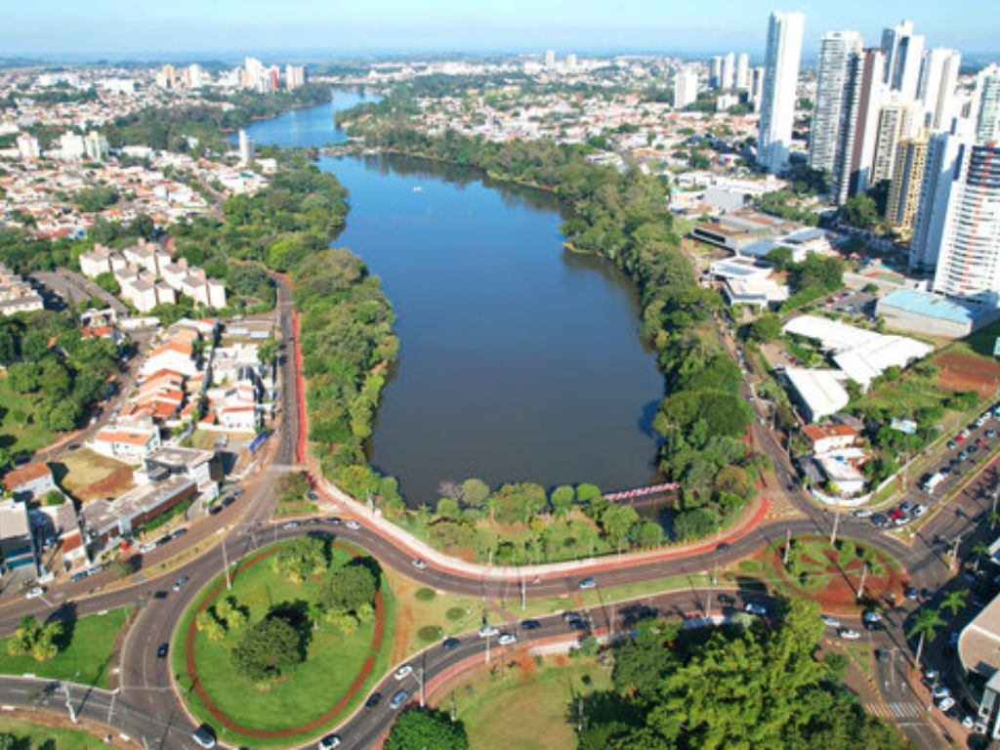

O estado do Paraná, localizado na região Sul do Brasil, destaca-se por sua diversidade cultural, riqueza natural e forte desenvolvimento econômico. Sua capital, Curitiba, é reconhecida internacionalmente pelo planejamento urbano inovador e pela qualidade de vida. O estado possui uma economia dinâmica, baseada na agricultura — com destaque para a produção de soja, milho e café — além de um setor industrial relevante.O Paraná também abriga importantes atrações turísticas, como as Cataratas do Iguaçu, consideradas uma das mais impressionantes formações naturais do mundo. Com uma população marcada pela influência de diferentes povos, como italianos, alemães, poloneses e ucranianos, o estado apresenta uma cultura rica e variada que se reflete na gastronomia, nas festas típicas e nas tradições locais.
